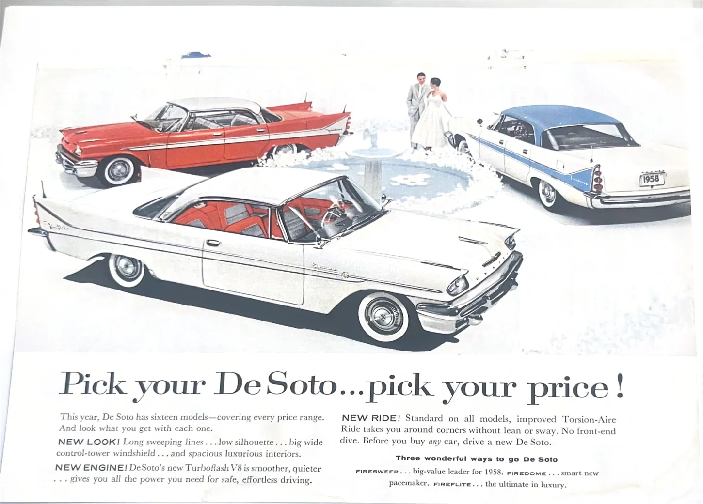
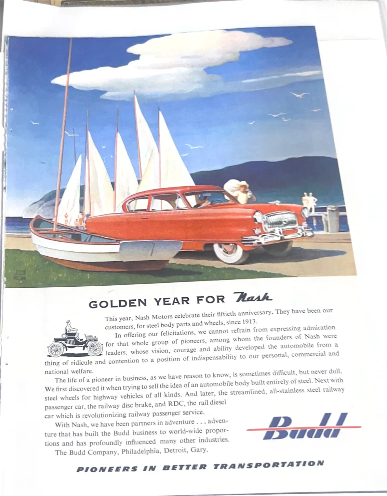
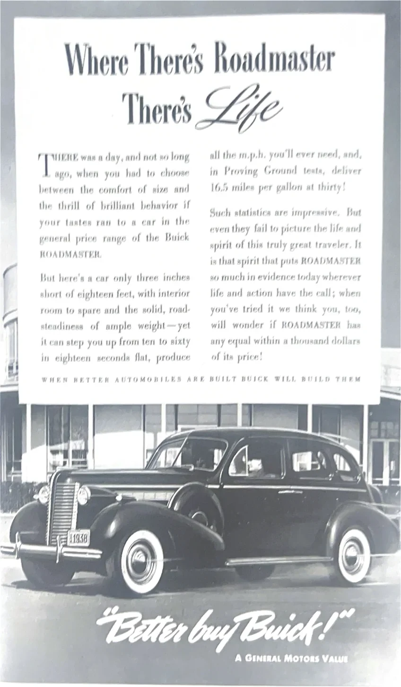

COLLECTION 003 · THE MOTORING ARCHIVE
Beautiful machines, beautifully remembered
From streamlined 1930s sedans to chrome-rich postwar icons, explore the magazine artwork and automobile stories preserved in this growing archive.
93 photographed pages · Condition, ownership and prices under review



93 scanned page photographs1930s–1960s featured erasPreview only none available for purchase yet
THE DETAILS MATTER
Explore the archive
Browse by automobile make, keyword and year. Select a photograph to see the full page.
Preview collection — not yet for sale. Product condition, individual ownership, duplicate scans, measurements, and prices are under review. You cannot purchase or reserve these pages until they have been verified and published as sale listings.
Original page photographs · No recreated artwork
These scans are for visual browsing only. Potential repeat photographs do not establish additional physical inventory.